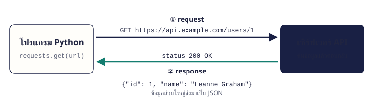

เมื่อจบบทนี้ นิสิตจะทำได้ เข้าใจ request/response และ status code เรียก API ด้วย requests.get ส่ง parameter อ่าน JSON และรับมือ error จากเครือข่าย
13.1 API ทำงานอย่างไร Web API คือบริการที่ให้โปรแกรมขอข้อมูลผ่าน URL โปรแกรมเราส่ง request ไป เซิร์ฟเวอร์ตอบกลับเป็น response ซึ่งมี status code บอกผล และข้อมูลส่วนใหญ่อยู่ในรูป JSON

โปรแกรม Python ส่ง GET request พร้อม URL ไปยังเซิร์ฟเวอร์ API แล้วได้ response กลับมาพร้อม status 200 และข้อมูล JSON 13.2 JSON กับ Python JSON หน้าตาคล้าย dict และ list ของ Python แปลงไปมาได้ด้วยโมดูล json: json.loads() แปลงข้อความ JSON เป็น Python และ json.dumps() แปลงกลับ
topic_13_2.py
import json
text = '{"course": "Python", "credits": 3, "online": true, "tags": ["basic", "data"]}'
data = json.loads (text)
print (data["course" ], data["credits" ], data["online" ])
print (data["tags" ][1 ])
print (json.dumps ({"ok" : True , "note" : None }))ผลลัพธ์ Python 3 True
data
{"ok": true, "note": null} 13.3 requests.get(): ขอข้อมูล แพ็กเกจ requests (ติดตั้งด้วย pip install requests) ทำให้เรียก API ได้ในบรรทัดเดียว ใส่ timeout เสมอเพื่อไม่ให้โปรแกรมรอไม่สิ้นสุด แล้วใช้ .json() แปลงผลเป็น dict/list
topic_13_3.py
import requests
response = requests.get ("https://jsonplaceholder.typicode.com/users/1" , timeout=5 )
print (response.status_code)
user = response.json ()
print (user["name" ])
print (user["address" ]["city" ])ผลลัพธ์ · จากข้อมูลตัวอย่างของ API (ไม่ได้ต่ออินเทอร์เน็ตจริงตอนสร้างหน้า) 200
Leanne Graham
Gwenborough จำง่าย ๆ jsonplaceholder.typicode.com เป็น API ฟรีสำหรับฝึก ไม่ต้องสมัคร ลองเปลี่ยนเลขท้าย URL ดูได้
13.4 ส่ง parameter ส่งเงื่อนไขการค้นหาด้วย params= เป็น dict แล้ว requests จะต่อท้าย URL ให้ในรูป ?key=value&... และจัดการช่องว่าง/ภาษาไทยให้เอง
topic_13_4.py
import requests
params = {"userId" : 1 , "completed" : "false" , "_limit" : 2 }
response = requests.get ("https://jsonplaceholder.typicode.com/todos" , params=params, timeout=5 )
print (response.url)
for todo in response.json ():
print ("-" , todo["title" ])ผลลัพธ์ · จากข้อมูลตัวอย่างของ API (ไม่ได้ต่ออินเทอร์เน็ตจริงตอนสร้างหน้า) https://jsonplaceholder.typicode.com/todos?userId=1&completed=false&_limit=2
- delectus aut autem
- quis ut nam facilis 13.5 รับมือเมื่อเรียกไม่สำเร็จ เครือข่ายล่มหรือเซิร์ฟเวอร์ตอบ error ได้เสมอ ใช้ raise_for_status() เปลี่ยน status 4xx/5xx เป็น error แล้วดักด้วย try/except
topic_13_5.py
import requests
try :
response = requests.get ("https://jsonplaceholder.typicode.com/users/999" , timeout=5 )
response.raise_for_status ()
print (response.json ()["name" ])
except requests.Timeout :
print ("เซิร์ฟเวอร์ตอบช้าเกินไป" )
except requests.RequestException as e:
print ("เรียก API ไม่สำเร็จ:" , e)ผลลัพธ์ · จากข้อมูลตัวอย่างของ API (ไม่ได้ต่ออินเทอร์เน็ตจริงตอนสร้างหน้า) เรียก API ไม่สำเร็จ: 404 Client Error for url: https://jsonplaceholder.typicode.com/users/999 จำง่าย ๆ API ที่ต้องใช้ key อย่าเขียน key ไว้ในโค้ด ให้อ่านจาก environment variable เช่น os.environ["API_KEY"]
ตัวอย่างโปรแกรม
ตัวอย่าง 13.1 ค้นหาโพสต์ของผู้ใช้เรียก API ด้วย parameter แล้วสรุปผลที่ได้
example_13_1.py
import requests
user_id = int (input ("userId: " ))
response = requests.get (
"https://jsonplaceholder.typicode.com/posts" ,
params={"userId" : user_id},
timeout=5 ,
)
response.raise_for_status ()
posts = response.json ()
print (f"ผู้ใช้ {user_id} มี {len(posts)} โพสต์" )
for post in posts:
print (f"#{post['id']} {post['title']}" )ผลลัพธ์ · ตัวที่ขีดเส้นใต้คือค่าที่ผู้ใช้พิมพ์ userId: 1
ผู้ใช้ 1 มี 3 โพสต์
#1 sunt aut facere repellat
#2 qui est esse
#3 ea molestias quasi exercitationem อธิบาย params สร้าง URL .../posts?userId=1 ให้อัตโนมัติraise_for_status() หยุดทันทีถ้า status ไม่ใช่ 2xxผลเป็น list ของ dict จึงใช้ len() และวน for ได้ตามปกติ
ตัวอย่าง 13.2 ดึงข้อมูลแล้วบันทึกเป็นไฟล์เก็บผลจาก API ลงไฟล์ JSON ไว้ใช้ต่อโดยไม่ต้องเรียกซ้ำ
example_13_2.py
import json
import requests
response = requests.get ("https://jsonplaceholder.typicode.com/users" , timeout=5 )
response.raise_for_status ()
users = [{"name" : u["name" ], "email" : u["email" ]} for u in response.json ()]
with open ("users.json" , "w" , encoding="utf-8" ) as f:
json.dump (users, f, indent=2 )
print (f"บันทึก {len(users)} คนลง users.json" )
print (users[0 ])ผลลัพธ์ · จากข้อมูลตัวอย่างของ API (ไม่ได้ต่ออินเทอร์เน็ตจริงตอนสร้างหน้า) บันทึก 3 คนลง users.json
{'name': 'Leanne Graham', 'email': 'Sincere@april.biz'} อธิบาย เลือกเก็บเฉพาะข้อมูลที่ต้องใช้ (name, email) ด้วย list comprehension json.dump บันทึกลงไฟล์เหมือนบทที่ 10ครั้งต่อไปอ่านจากไฟล์ได้เลย ลดการเรียก API ซ้ำ
แบบฝึกหัดท้ายบท
เรียงจากง่ายไปยาก ลองเขียนเองให้ได้ผลลัพธ์ตรงตัวอย่างก่อน แล้วค่อยเปิดเฉลย
ระดับความยาก: ง่าย ปานกลาง ท้าทาย
ข้อ 13.1 อ่าน JSON ซ้อนชั้นง่าย จากข้อความ JSON {"course": "Python", "teacher": {"name": "Mark"}, "topics": ["loop", "function", "class"]} ให้แสดงชื่อผู้สอนและจำนวนหัวข้อ
เข้าใจโจทย์
โจทย์ให้ ข้อความ JSON
ต้องหา ผู้สอน Mark สอน 3 หัวข้อวิธีคิด json.loads() แปลงเป็น dictซ้อนชั้นใช้ data["teacher"]["name"] len() นับ listตัวอย่างผลลัพธ์ ผู้สอน Mark สอน 3 หัวข้อ
🔒 ใส่รหัสเพื่อดูเฉลย
แนวคำตอบและเหตุผล
JSON ที่ซ้อนกันเข้าถึงทีละชั้นด้วยวงเล็บเหลี่ยมต่อกัน เหมือน dict ใน dict
ex_13_1.py
import json
text = '{"course": "Python", "teacher": {"name": "Mark"}, "topics": ["loop", "function", "class"]}'
data = json.loads (text)
print (f"ผู้สอน {data['teacher']['name']} สอน {len(data['topics'])} หัวข้อ" )
ข้อ 13.2 ดูข้อมูลผู้ใช้จาก APIง่าย เรียก https://jsonplaceholder.typicode.com/users/2 แล้วแสดงชื่อ อีเมล และเมือง
เข้าใจโจทย์
โจทย์ให้ URL ของผู้ใช้หมายเลข 2
ต้องหา ชื่อ อีเมล และเมืองของผู้ใช้ วิธีคิด requests.get(url, timeout=5).json() ได้ dictเมืองอยู่ใน address ตัวอย่างผลลัพธ์ · จากข้อมูลตัวอย่างของ API (ไม่ได้ต่ออินเทอร์เน็ตจริงตอนสร้างหน้า) ชื่อ: Ervin Howell
อีเมล: Shanna@melissa.tv
เมือง: Wisokyburgh
🔒 ใส่รหัสเพื่อดูเฉลย
แนวคำตอบและเหตุผล
เปิด URL นี้ในเบราว์เซอร์ก่อนจะเห็นโครงสร้าง JSON ทั้งหมด ช่วยให้รู้ว่าต้องใช้ key อะไร
ex_13_2.py
import requests
user = requests.get ("https://jsonplaceholder.typicode.com/users/2" , timeout=5 ).json ()
print ("ชื่อ:" , user["name" ])
print ("อีเมล:" , user["email" ])
print ("เมือง:" , user["address" ]["city" ])
ข้อ 13.3 นับงานที่เสร็จแล้วปานกลาง เรียกรายการ todo ของ userId 1 แล้วนับว่าเสร็จกี่งาน ยังไม่เสร็จกี่งาน
เข้าใจโจทย์
โจทย์ให้ API /todos พร้อม params={"userId": 1}
ต้องหา เสร็จ 2 งาน ค้าง 2 งานวิธีคิด ส่ง params แทนการต่อ URL เอง completed เป็น True/Falsesum(t["completed"] for t in todos) นับ Trueตัวอย่างผลลัพธ์ · จากข้อมูลตัวอย่างของ API (ไม่ได้ต่ออินเทอร์เน็ตจริงตอนสร้างหน้า) เสร็จ 2 งาน ค้าง 2 งาน
🔒 ใส่รหัสเพื่อดูเฉลย
แนวคำตอบและเหตุผล
true ใน JSON กลายเป็น True ของ Python และ True นับเป็น 1 เมื่อนำมา sum
ex_13_3.py
import requests
todos = requests.get (
"https://jsonplaceholder.typicode.com/todos" ,
params={"userId" : 1 },
timeout=5 ,
).json ()
done = sum (t["completed" ] for t in todos)
print (f"เสร็จ {done} งาน ค้าง {len(todos) - done} งาน" )
ข้อ 13.4 สร้าง JSON ส่งให้ APIปานกลาง สร้าง dict ข้อมูลการลงทะเบียน (ชื่อ, วิชา, ยืนยันแล้ว = True, หมายเหตุ = ไม่มี) แล้วแปลงเป็นข้อความ JSON ที่จัดย่อหน้า
เข้าใจโจทย์
โจทย์ให้ Hobi, ลงวิชา Python และ Data, ยืนยันแล้ว, ไม่มีหมายเหตุ
ต้องหา ข้อความ JSON ที่มี true และ null วิธีคิด ใช้ True และ None ใน Python json.dumps(data, indent=2, ensure_ascii=False)ตัวอย่างผลลัพธ์ {
"name": "Hobi",
"courses": [
"Python",
"Data"
],
"confirmed": true,
"note": null
}
🔒 ใส่รหัสเพื่อดูเฉลย
แนวคำตอบและเหตุผล
ตอนส่งข้อมูลไป API ต้องแปลงเป็น JSON ก่อน True กลายเป็น true และ None กลายเป็น null ตามมาตรฐาน JSON
ex_13_4.py
import json
data = {"name" : "Hobi" , "courses" : ["Python" , "Data" ], "confirmed" : True , "note" : None }
print (json.dumps (data, indent=2 , ensure_ascii=False ))
ข้อ 13.5 เรียก API อย่างปลอดภัยท้าทาย เขียนฟังก์ชัน get_user(user_id) ที่คืน dict ผู้ใช้ หรือคืน None เมื่อไม่พบ (404) หรือเชื่อมต่อไม่ได้ แล้วทดสอบกับ id ที่ไม่มีอยู่
เข้าใจโจทย์
โจทย์ให้ user_id = 999 (API ตอบ 404)
ต้องหา ไม่พบผู้ใช้ 999วิธีคิด ใส่ timeout=5 raise_for_status() แล้วดัก requests.RequestExceptionผู้เรียกตรวจ is None ตัวอย่างผลลัพธ์ · จากข้อมูลตัวอย่างของ API (ไม่ได้ต่ออินเทอร์เน็ตจริงตอนสร้างหน้า) ไม่พบผู้ใช้ 999
🔒 ใส่รหัสเพื่อดูเฉลย
แนวคำตอบและเหตุผล
RequestException เป็นแม่ของ error ทุกแบบใน requests (Timeout, ConnectionError, HTTPError) ดักตัวเดียวครอบคลุมทุกกรณี
ex_13_5.py
import requests
def get_user (user_id):
try :
response = requests.get (f"https://jsonplaceholder.typicode.com/users/{user_id}" , timeout=5 )
response.raise_for_status ()
return response.json ()
except requests.RequestException :
return None
user = get_user (999 )
if user is None :
print ("ไม่พบผู้ใช้ 999" )
else :
print (user["name" ])
ข้อ 13.6 รายงานจาก APIท้าทาย เรียก /posts (ได้หลายโพสต์จากหลายผู้ใช้) แล้วนับว่าแต่ละ userId มีกี่โพสต์ แสดงเรียงตาม userId
เข้าใจโจทย์
โจทย์ให้ รายการโพสต์ที่มี userId
ต้องหา userId 1: 2 โพสต์ และ userId 2: 3 โพสต์วิธีคิด นับด้วย dict และ get(key, 0) + 1 (บทที่ 7) sorted(counts.items()) เรียงตาม keyตัวอย่างผลลัพธ์ · จากข้อมูลตัวอย่างของ API (ไม่ได้ต่ออินเทอร์เน็ตจริงตอนสร้างหน้า) userId 1: 2 โพสต์
userId 2: 3 โพสต์
🔒 ใส่รหัสเพื่อดูเฉลย
แนวคำตอบและเหตุผล
ข้อมูลจาก API คือ list/dict ธรรมดา จึงใช้เทคนิคการนับจากบทก่อน ๆ ได้ทั้งหมด
ex_13_6.py
import requests
posts = requests.get ("https://jsonplaceholder.typicode.com/posts" , timeout=5 ).json ()
counts = {}
for post in posts:
counts[post["userId" ]] = counts.get (post["userId" ], 0 ) + 1
for user_id, n in sorted (counts.items ()):
print (f"userId {user_id}: {n} โพสต์" )